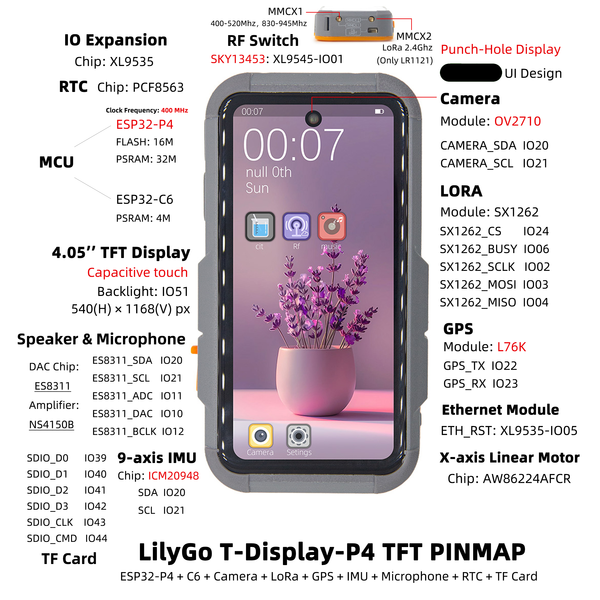

中文 简体
中文 简体LILYGO T-Display-P4

版本迭代:
| Version | Update date | Update description |
|---|---|---|
| T-Display-P4_V1.0 | 2025-06-13 | 初始版本 |
| T-Display-P4-Keyboard_V1.0 | 2025-09-12 | 键盘扩展板初始版本 |
购买链接
| Product | SOC | FLASH | PSRAM | Link |
|---|---|---|---|---|
| T-Display-P4_V1.0 | ESP32-P4 | 16MB | - | LILYGO Mall |
| T-Display-P4-Keyboard_V1.0 | - | - | - | LILYGO Mall |
目录
描述
T-Display-P4 是一款基于 ESP32-P4 高性能核心的多功能开发板，专为复杂图形处理、多媒体交互与物联网应用设计。主要特点包括：
- 高性能处理：搭载 ESP32-P4 处理器，支持复杂图形与视频任务处理。
- 高清显示：配备 4.05 英寸 MIPI 接口屏幕，分辨率达 540×1168px，支持触控。
- 双核协同：板载 ESP32-C6 辅助处理器，支持 Wi-Fi 6 与蓝牙 5.3。
- 丰富外设：集成扬声器、麦克风、线性振动马达、LoRa、GPS、以太网、摄像头、电池监测等模块。
- 扩展性强：提供丰富 GPIO 接口，支持键盘扩展板（T-Display-P4-Keyboard）。
预览
实物图

引脚图
T-Display-P4有Amoled、TFT两个版本，引脚图如下
Amoled版本

TFT版本

模块
T-Display-P4 主板
1. 核心处理器
- 芯片：ESP32-P4
- FLASH：16MB
- 资料：Espressif 官方文档
2. 辅助处理器
- 模组：ESP32-C6-MINI-1U
- 芯片：ESP32-C6-FH4
- PSRAM：4MB
- 通信协议：SDIO
- 资料：ESP32-C6-MINI-1U 数据手册
3. 屏幕与触摸
| 型号 | H0405S002T002-V0 (TFT) | H0410S001AMT001-V0 (AMOLED) |
|---|---|---|
| 尺寸 | 4.05 英寸 | 4.1 英寸 |
| 类型 | α-Si TFT | AMOLED |
| 分辨率 | 540×1168px | 568×1232px |
| 接口 | MIPI + I2C | MIPI + I2C |
| 驱动芯片 | HI8561 | RM69A10 + GT9895 |
| 亮度 | 550 cd/m² | 500 cd/m² |
| 对比度 | 1200:1 | 20000:1 |
| 触控点数 | 10 点 | 10 点 |
| 资料 | HI8561 | RM69A10 GT9895 |
4. 音频模块
5. 振动马达
- 驱动芯片：AW86224AFCR
- 通信协议：I2C
- 资料：AW86224
6. LoRa 模块
- 模组：HPD16A
- 芯片：SX1262
- 通信协议：SPI
- 资料：SX1261-2
7. GPS 模块
- 模组：L76K
- 通信协议：UART
- 资料：L76K
8. RTC 时钟
- 芯片：PCF8563
- 通信协议：I2C
- 资料：PCF8563
9. 充电管理
- 芯片：LGS4056H
- 说明：支持三线电池 NTC 温度检测
- 资料：LGS4056H
10. 电量监测
- 芯片：BQ27220
- 通信协议：I2C
- 资料：BQ27220
11. 摄像头
- 型号：OV2710（MIPI 接口）
- 资料：OV2710
12. 惯性传感器
- 芯片：ICM20948
- 通信协议：I2C
- 资料：ICM20948
13. IO 扩展
- 芯片：XL9535
- 通信协议：I2C
- 资料：XL9535
T-Display-P4-Keyboard 扩展板
1. 键盘驱动
- 芯片：TCA8418
- 通信协议：I2C
- 资料：TCA8418
2. 背光驱动
- 芯片：SY7200A
- 通信协议：PWM
- 资料：SY7200A
3. IO 扩展
- 芯片：XL9555
- 通信协议：I2C
- 资料：XL9555
4. 无线模块（T-MixRF）
| 模块 | 芯片 | 协议 | 资料 |
|---|---|---|---|
| CC1101 | CC1101 | SPI | CC1101 |
| NRF24L01 | NRF24L01 | SPI | NRF24L01 |
| NFC | ST25R3916 | SPI | ST25R3916 |
概述
| 组件 | 描述 |
|---|---|
| MCU | ESP32-S3R8 Dual-core LX7 microprocessor |
| FLASH | 16MB |
| PSRAM | 8MB |
| 屏幕 | 1.91 英寸 RM67162 IPS AMOLED |
| 触摸 | 电容触摸屏 |
| LoRa | LR1121 (1276/868/915MHz) |
| 存储 | TF 卡 |
| RTC | PCF85063ATL/1 |
| 电源管理 | AXPM65611 + BQ25896 |
| 无线 | 2.4 GHz Wi-Fi & Bluetooth 5 (LE) |
| USB | 1 × USB Port and OTG (TYPE-C接口) |
| IO 接口 | 2×13 双排扩展接口 |
| 拓展接口 | FPC天线 + TF卡 + STEMMA QT/QWIIC + JST-GH 1.25MM |
| 按键 | 1 x RESET 按键 + 1 x BOOT 按键 |
| 孔位 | 4 × 2mm定位孔 |
| 尺寸 | 60×32×12mm |
快速开始
示例支持
T-Display-P4 示例
T-Display-P4-Keyboard 示例
| example | [vscode][esp-idf-v5.4.0] |
description | picture |
|---|---|---|---|
| radiolib_cc1101_send_receive | |||
| radiolib_nrf24l01_send_receive | |||
| screen_tca8418_lvgl_touch_draw | |||
| st25r3916 | |||
| tca8418 | |||
| xl9555 |
ESP-IDF Visual Studio Code
安装 Visual Studio Code ，根据你的系统类型选择安装。
打开 VisualStudioCode 软件侧边栏的“扩展”（或者使用Ctrl+Shift+X打开扩展），搜索“ESP-IDF”扩展并下载。
在安装扩展的期间，使用git命令克隆仓库
git clone --recursive https://github.com/Xinyuan-LilyGO/T-Display-P4.git克隆时候需要同时加上“--recursive”，如果克隆时候未加上那么之后使用的时候需要初始化一下子模块
git submodule update --init --recursive下载安装 ESP-IDF v5.4.1，记录一下安装路径，打开之前安装好的“ESP-IDF”扩展打开“配置 ESP-IDF 扩展”，选择“USE EXISTING SETUP”菜单，选择“Search ESP-IDF in system”栏，正确配置之前记录的安装路径：
- ESP-IDF directory (IDF_PATH):
你的安装路径xxx\Espressif\frameworks\esp-idf-v5.4 - ESP-IDF Tools directory (IDF_TOOLS_PATH):
你的安装路径xxx\Espressif
点击右下角的“install”进行框架安装。
- ESP-IDF directory (IDF_PATH):
点击 Visual Studio Code 底部菜单栏的 ESP-IDF 扩展菜单“SDK 配置编辑器”，在搜索栏里搜索“Select the example to build”字段，选择你所需要编译的项目，再在搜索栏里搜索“Select the camera type”字段，选择你的板子板载的摄像头类型，点击保存。
点击 Visual Studio Code 底部菜单栏的“设置乐鑫设备目标”，选择ESP32P4，点击底部菜单栏的“构建项目”，等待构建完成后点击底部菜单栏的“选择要使用的端口”，之后点击底部菜单栏的“烧录项目”进行烧录程序。

固件下载
| firmware | description | picture |
|---|---|---|
| t_display_p4_lvgl_9_ui | 出厂程序 | |
| t_display_p4_keyboard_lvgl_9_ui | 键盘扩展板出厂程序 | |
| esp32c6_at | esp32c6-at 出厂程序 | |
| esp32c6_slave_esp_hosted_mcu_network_adapter | ||
| t_display_p4_xiaozhi |
引脚总览
引脚定义请参考配置文件：
t_display_p4_config.h
t_display_p4_keyboard_config.h
开发平台
相关测试
功耗
| firmware | program | description | picture |
|---|---|---|---|
| deep_sleep(single_board) | deep_sleep | 平均电流消耗: 1.2mA 更多信息请查看 功耗测试日志 |
摄像头
| program | description | picture |
|---|---|---|
| uvc_sc2336 | 原图和拍摄屏幕图片截图效果 | |
| uvc_ov2710 | 原图和拍摄屏幕图片截图效果 | |


常见问题
- Q. 看了以上教程我还是不会搭建编程环境怎么办？
- A. 如果看了以上教程还不懂如何搭建环境的可以参考LilyGo-Document文档说明来搭建。
- Q. 为什么我的板子一直烧录失败呢？
- A. 请按住“BOOT”按键重新下载程序。
Q. 为什么我使用espidf框架在选择目标编译芯片或者在配置SDK的menuconfig的时候配置失败，报以下错误：
asyncio.exceptions.LimitOverrunError: Separator is found, but chunk is longer than limit ValueError: Separator is found, but chunk is longer than limitA. 这个是espidf框架v5.4~v5.5的一个bug，需要将路径为
esp-idf-v5.x\tools\idf_py_actions\tools.py文件的第351行做如下修改：原始代码： p = await asyncio.create_subprocess_exec(*cmd, env=env_copy, limit=1024 * 256, cwd=self.cwd, stdout=asyncio.subprocess.PIPE,stderr=asyncio.subprocess.PIPE) 修改后的代码： p = await asyncio.create_subprocess_exec(*cmd, env=env_copy, limit=1024 * 512, cwd=self.cwd, stdout=asyncio.subprocess.PIPE,stderr=asyncio.subprocess.PIPE)
项目
资料
- ESP32-S3 Datasheet
- LR1121 Datasheet
- （更多资料请参考GitHub仓库）